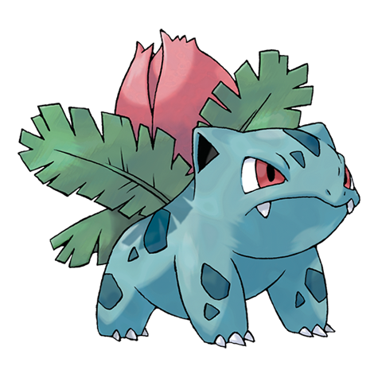

1. Bulbasaur

Tipo: Planta, Veneno
Una extraña semilla fue plantada en su espalda al nacer. La planta brota y crece con este Pokémon.
Habilidades: Espesura, Clorofila
2. Ivysaur
Tipo: Planta, Veneno
Cuando la yema de su lomo crece, parece no poder permanecer en su sitio por mucho tiempo.
Habilidades: Espesura, Clorofila
3. Venusaur

Tipo: Planta, Veneno
La planta florece cuando absorbe energía solar. Esto le obliga a permanecer en movimiento para buscar la luz del sol.
Habilidades: Espesura, Clorofila
4. Charmander

Tipo: Fuego
La llama de su cola indica su fuerza vital. Si está débil, la llama arderá más tenue.
Habilidades: Mar Llamas
5. Charmeleon

Tipo: Fuego
Al agitar su ardiente cola, eleva poco a poco la temperatura a su alrededor para sofocar a sus rivales.
Habilidades: Mar Llamas
6. Charizard

Tipo: Fuego, Volador
Cuando se enfurece de verdad, la llama de la punta de su cola se vuelve de color azul claro.
Habilidades: Mar Llamas
7. Squirtle

Tipo: Agua
Tras nacer, se le hincha el lomo y se le forma un caparazón. Escupe poderosa espuma por la boca.
Habilidades: Torrente
8. Wartortle

Tipo: Agua
Tiene una cola larga y peluda que simboliza la longevidad y lo hace popular entre los mayores.
Habilidades: Torrente
9. Blastoise

Tipo: Agua
Aumenta de peso deliberadamente para contrarrestar la fuerza de los chorros de agua que dispara.
Habilidades: Torrente